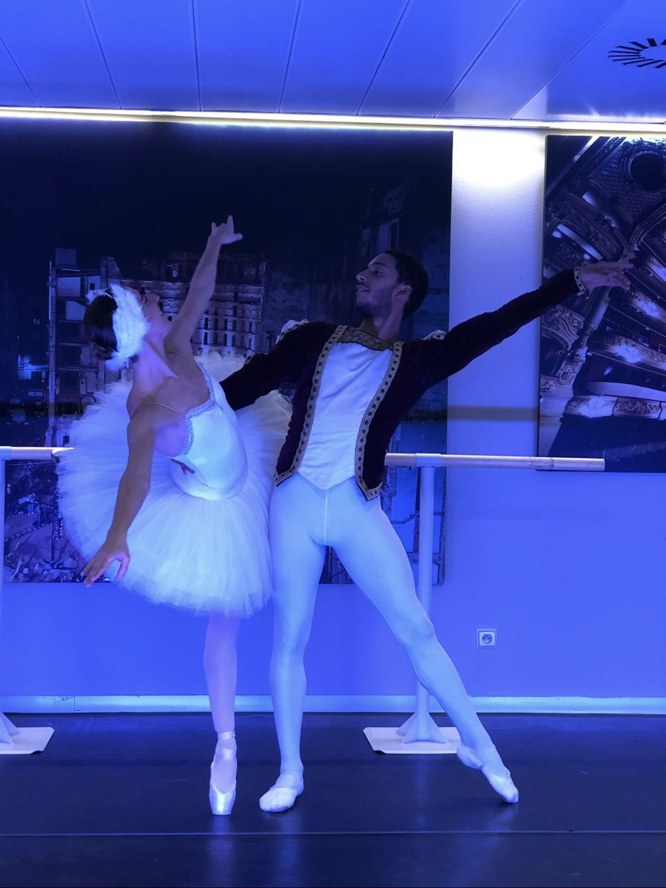
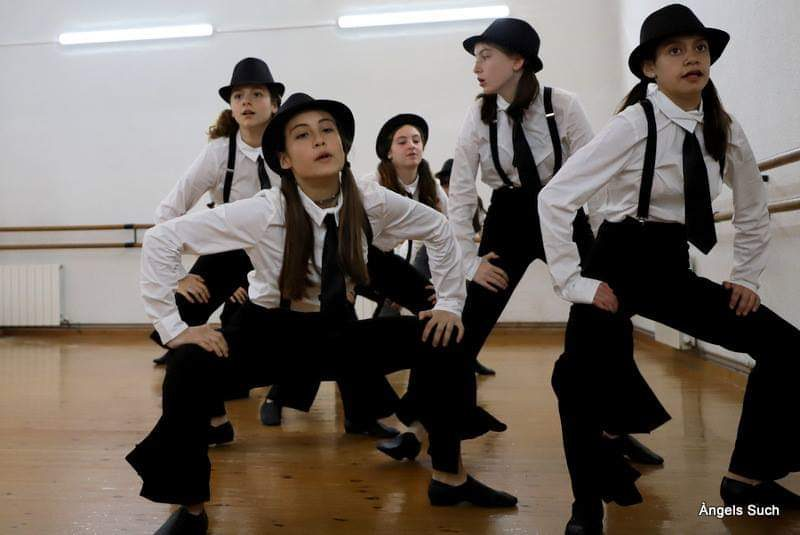
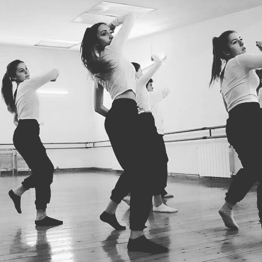
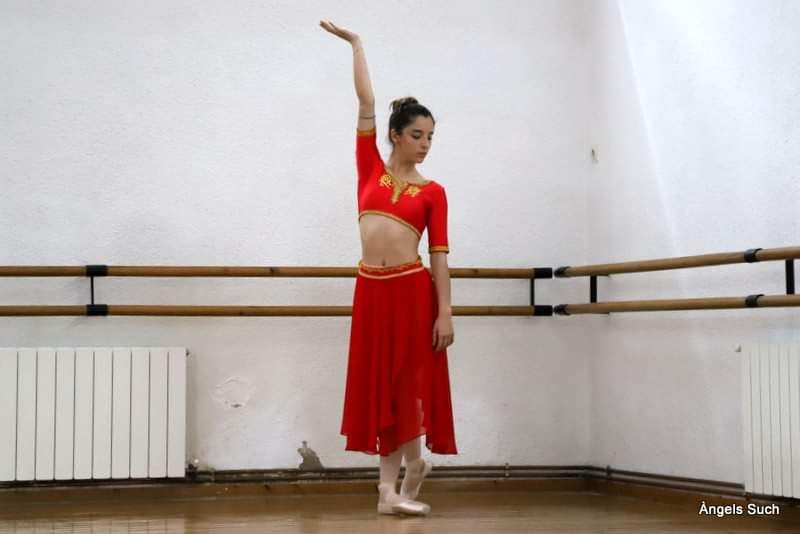
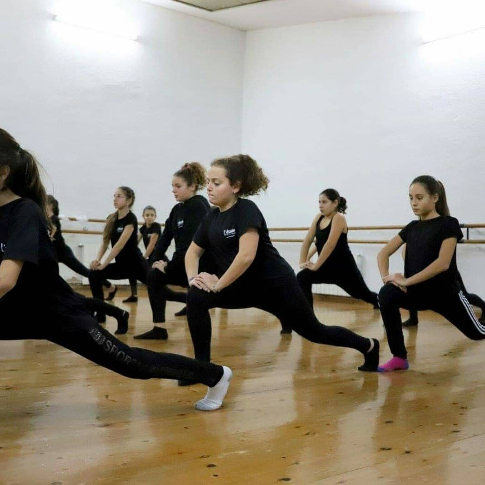
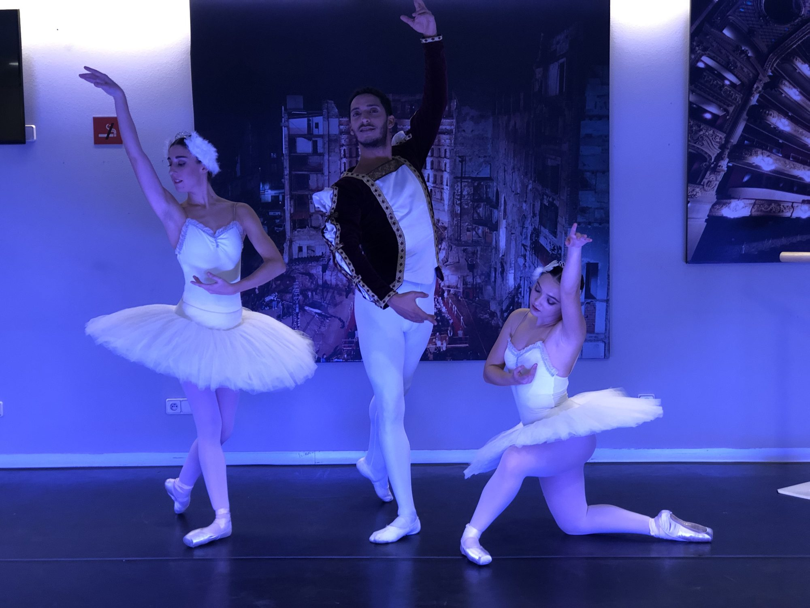

Centre
Carrer de la Mercè, 58 · 08911 Badalona
De dilluns a divendres a la tarda, dissabtes al matí.
Base tècnica des de petits fins al nivell avançat i les puntes.
De la iniciació a l'avançat, amb grups per edat i nivell.
Jazz infantil, juvenil, musical i per a adults.
Cant, interpretació i dansa, en quatre nivells.
Dues disciplines amb ritme propi.
Dansa, jazz, ioga i pilates. Mai és tard per començar.
Horaris orientatius del curs. Escriu-nos i et confirmem grup i plaça.






Carrer de la Mercè, 58 · 08911 Badalona
De dilluns a divendres a la tarda, dissabtes al matí.
Carrer de Pere III, 38 · 08915 Badalona
De dilluns a divendres a la tarda, dissabtes al matí.